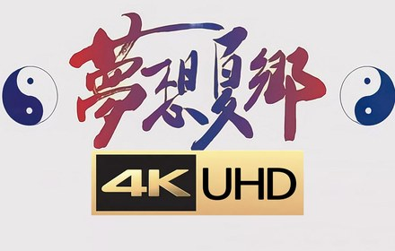
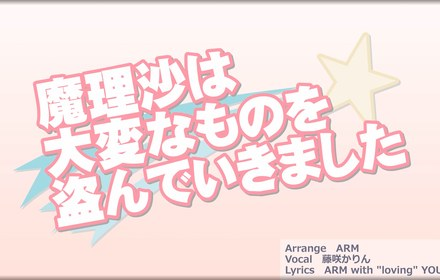

《幻想万華鏡》
同人动画
幻想万華鏡
The Memories Of Phantasm| 年份 | 2011 年起 |
|---|---|
| 社团／作者 | 満福神社 |
以游戏剧情为蓝本制作的高质量同人动画系列，作画与配乐水准相当接近商业动画；主题歌由幽閉サテライト负责，第一话公开后迅速在视频网站传播，至今仍是很多人心中「东方动画化」的代名词。
入选理由：让大量没玩过原作的人第一次认识东方，是同人动画里影响最大的一部。
FAN WORKS · 二次创作 · 精选 6 部
首页 > 同人作品
| 年份 | 2011 年起 |
|---|---|
| 社团／作者 | 満福神社 |
以游戏剧情为蓝本制作的高质量同人动画系列，作画与配乐水准相当接近商业动画；主题歌由幽閉サテライト负责，第一话公开后迅速在视频网站传播，至今仍是很多人心中「东方动画化」的代名词。
入选理由：让大量没玩过原作的人第一次认识东方，是同人动画里影响最大的一部。

| 年份 | 2008 年起 |
|---|---|
| 社团／作者 | 舞風（MAIKAZE） |
带配音的同人动画，目标就是回答「如果幻想乡被改成 TV 动画会是什么样」，配音由爱好者自发参与。在《幻想万華鏡》出现之前，它几乎是东方同人动画的唯一代表。
入选理由：最早把「东方动画化」做成的作品，奠定了同人动画的审美基调。
| 年份 | 2007 年 |
|---|---|
| 社团／作者 | Alstroemeria Records |
把 ZUN 在《东方幻想乡》里的原曲改写成英文演唱的电子曲；2009 年流传开的黑白剪影 PV 让它扩散到全世界，成为东方在海外知名度最高的一首。
入选理由：东方「出圈」的典型案例，很多人是先听过这首歌才知道东方。

| 年份 | 2006 年 |
|---|---|
| 社团／作者 | IOSYS |
把《东方红魔乡》的旋律拼贴成电波风格的同人曲，副歌与角色梗一起成为早期网络迷因，至今仍是东方同人音乐中被引用、被翻唱最多的作品之一。
入选理由：同人音乐里传播最广的「迷因曲」，几乎代表了东方二次创作的活力。
| 年份 | 2011 年 |
|---|---|
| 社团／作者 | 幽閉サテライト |
《幻想万華鏡》第一话的主题歌，和风旋律与动画演出结合得很紧，属于同人音乐里少见的「先有动画、再有歌」的例子，单曲在展会与通贩中都长期热销。
入选理由：同人音乐与同人动画互相成就的代表，旋律几乎成了这一系列的名片。
| 年份 | 2006 年 |
|---|---|
| 社团／作者 | 黄昏边境 |
以洛克人式的横版动作为玩法、以魔理沙为主角的同人 ACT，八个 BOSS 对应不同角色的能力，完成度与难度都很高。制作方黄昏边境后来参与了多部官方合作的格斗游戏，这部早期作品常被视为他们的起点。
入选理由：同人游戏里少见的「完成度堪比商业作品」，也让人看到了二次创作到官方合作的可能。
以上作品均为二次创作，版权归満福神社、舞風、Alstroemeria Records、IOSYS、幽閉サテライト、黄昏边境所有。